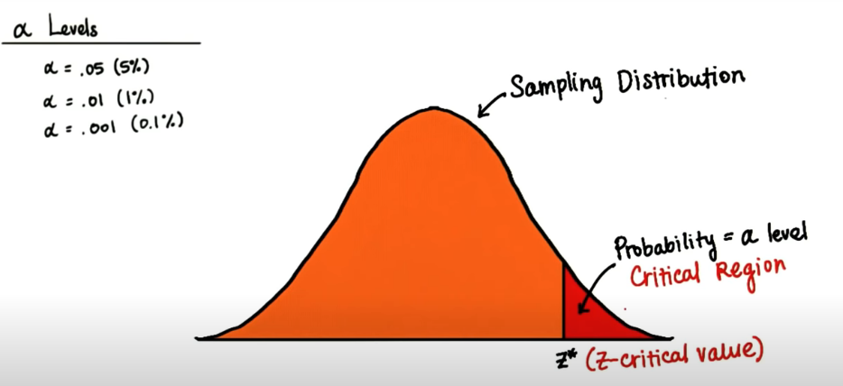
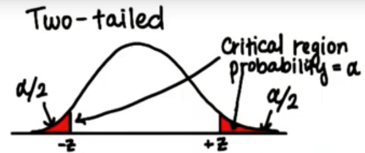
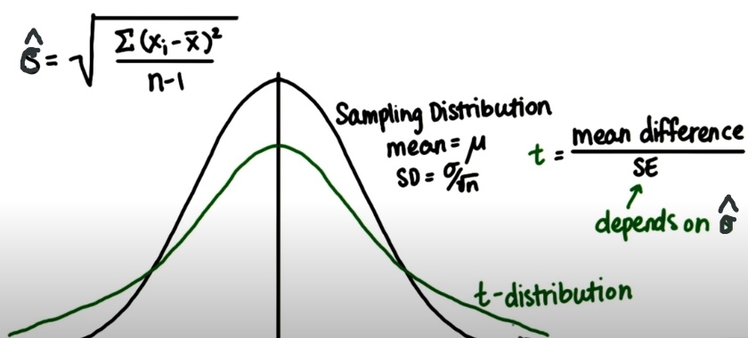
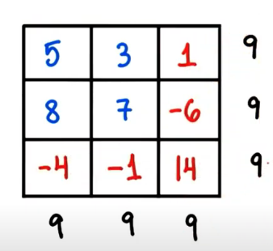
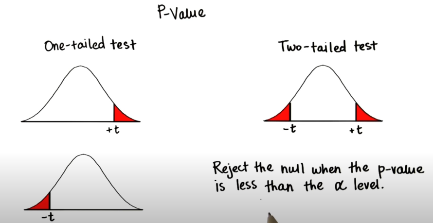

Intro to Statistics
Table of Contents
1 Symbols
| \(\mu\) | mean(expected value) |
| \(\sigma\) | standard deviation |
| \(\hat\mu\) | estimated population mean |
| \(\hat\sigma\) | estimated population sd |
| \(\bar{X_i}\) | one sample \(X_i\)'s mean |
| \(s\) | sample sd |
| \(n\) | sample size |
- \(\hat\mu=\bar{X_i}\)
- Bessel's correction
\[\hat\sigma=\sqrt\frac{\sum_{i=1}^n(x_i-\bar{x})}{n-1}\]
- \(n-1\): effective sample size
2 Sampling Distribution
- Sampling Distribution
- Distribution of sample means
| \(X_i\) | Variable in Sample i |
| \(\bar{X_i}\) | sample mean |
| \(n\) | number of samples |
| \(M\) | mean of sample means |
| \(SE\)(Standard Error) | standard deviation of sample means |
- \(M=\frac{1}{n}\sum_{i=1}^{n}\bar{X_i}\)
- Ratio of \(\sigma\) to \(SE\): \(\frac{\sigma}{SE}=\sqrt{n}\)
- Margin of Error: \(z\cdot\frac{\sigma}{\sqrt{n}}\). it's half the width of the confidence interval.
- e.g. for 95% CI: Margin of Error \(= 1.96SE = \frac{1.96\sigma}{\sqrt{n}}\)
- Central Limit Theorem \[SE=\frac{\sigma}{\sqrt{n}}\]
- z score of sample mean: \(z=\frac{\bar{X_i} - \mu}{SE}\)
2.1 Confidence Interval Bounds
| z-score(critical value) | CI |
|---|---|
| \(\pm 1.96\) | 95% |
| \(\pm 2.33\) | 98% |
\(\bar{X_i}\) should be in \((\mu-1.96SE, \mu+1.96SE)\), then 95% Confidence Interval is: \[\bar{X_i}-1.96SE<\mu<\bar{X_i}+1.96SE\]
- 95% CI with the bigger sample size -> the smaller CI bounds
3 Hypothesis Testing
3.1 \(\alpha\) Levels
Levels of Likelihood. \(\alpha\) level is a criterion for deciding whether or not something is likely or unlikely.
- 5% (generally used)
- 1%
- 0.1%
3.2 Critical Region
For one-tailed test

For two-tailed test

3.3 Hypotheses
- \(\mu_I\) is the population parameters after the intervention. (干预后的实验)
- \(H_0\) (Null Hypothesis): \(\mu\approx\mu_I\) (no significant difference)
- \(\mu_I\) is not in critical region
- \(H_a\) (Alternative Hypothesis), or \(H_1\)
- \(\mu_I\) is in critical region
- \[\mu\not\approx\mu_I\]
- \(\mu\lt\mu_I\) \(\mu_I\) is in the one-tailed right critical region
- \(\mu\gt\mu_I\) one-tailed left critical region
- \(\mu\neq\mu_I\) two-tailed
3.3.1 Example
- \(H_0\): Most dogs have four legs. (Most = more than 50%)
- \(H_A\): Most dogs have less than four legs.(one-tailed Test)
- Sample: 10 dogs, all have four legs. (fail to reject \(H_0\))
- Sample: 10 dogs, 6 dogs have three legs. (reject \(H_0\))
3.4 Statistical Decision Errors
| Reject \(H_0\) | Retain \(H_0\) | |
| real world \(H_0\) True | Type I Error | Correct |
| real world \(H_0\) False | Correct | Type II Error |
3.5 t-Tests
3.5.1 t-Distribution
Since we don't know the population standard deviation \(\sigma\), we use sample standard deviation \(s\) to calculate \(SE\). It's more prone to error. It's more spread out and thicker in the tails than a normal distribution. 
3.5.2 Degrees of Freedom
- Example1: You have to choose n numbers from all natural numbers.(\(DF=n\))
- Example2: You have n numbers that must sum to 10. (\(DF=n-1\))
- Example3: \(DF=4\) 
- Related to estimated population sd
- \(x_1+x_2+...+x_n=\bar{x}\cdot{n}\) (to get \(\bar{x}\cdot{n}\) -> \(DF=n-1\))
- Only \(n-1\) values are independent after we know the mean.
3.5.3 P-Value

3.5.4 One Sample t-Test
\[t=\frac{\hat\mu-\mu_0}{\hat\sigma/\sqrt{n}}\]
- \(\mu_0\) is some specified value.
- \(H_0\): \(\mu = \mu_0\)
- \(H_A\): \(\mu < \mu_0\), \(\mu > \mu_0\), \(\mu \neq \mu_0\)
- Cohen's d: \(d=\frac{\hat\mu-\mu_0}{\hat\sigma}\)
3.5.5 Dependent t-Test
4 Correlation
- X: predictor/explanatory/independent variable
- Y: outcome/response/dependent variable
4.1 Covariance
\[cov(X, Y)=\sum_{i=1}^n((x_i-\bar{x})(y_i-\bar{y}))\]
4.2 Correlation Coefficient
Correlation coefficient \(r\) is also known as Pearson's r. \[r=\frac{cov(X, Y)}{S_X \cdot S_Y}\]
- \(cov\) is the sample covariance. %cov(X, Y)=%
- The range of \(r\) is from -1 to 1
- \(r^2\) = % of the variation in Y explained by the variation in X
- \(r^2\) is called coefficient of determination, measures the strength of the relationship.
- Function
PEARSONIn Excel
5 Scipy Tools
5.1 Normal Distribution
from scipy.stats import norm # 98% CI to z-score norm.ppf(0.01+0.98) # => 2.3263478740408408 norm.ppf(0.01) # => -2.3263478740408408 # z-score to cdf, reverse of ppf norm.cdf(2.3263478740408408) # => 0.99 # z-score to sf, sf=1-cdf norm.sf(2.3263478740408408) # => 0.01 # alpha level for one-tailed test norm.pdf(2.3263478740408408) # => 0.02665214220345808
5.2 t-Distribution
from scipy.stats import t df = 19 # Degrees of Freedom # 98% CI to t-statistic t.ppf(0.01+0.98, df) # => 2.539483190622288 # t-statistic to cdf t.cdf(2.539483190622288, df) # => 0.9899999999999646 ~ 0.99 # t-statistic to sf, sf=1-cdf t.sf(2.539483190622288, df) # => 0.01 t.pdf(2.539483190622288, df) # => 0.021185141747626802